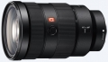
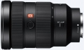
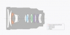

器材库 > 35mm画幅AF变焦镜头 > FE 24-70/2.8 GM

详细规格
镜头类型
标准变焦镜头
发布日期
2016-02-04
厂家推荐价格
2,199.99 （美元）
焦距
24mm-70mm
最大光圈
f/2.8
最小光圈
f/22
视角（对角）
84°-34°
镜头结构
18片/13组
非球面镜片
3片
低/超低色散镜片
2片
光圈叶片
9片
最近对焦距离
37cm
最大放大倍率
0.24
驱动马达
DDSSM
滤镜口径
82mm
镜头卡口
Sony E
防抖
否
颜色
黑色
尺寸
87.6×136mm
重量
886g
附件
遮光罩，镜头前盖，镜头后盖，镜头袋
备注
防尘防滴溅功能
掌门师叔2018-06-22 11:354.58 分
操作性 4.00耐用性 5.00性价比 4.00解像力 4.50色彩还原 5.00机械结构 5.00
xgl8902016-05-01 09:324.83 分
操作性 5.00耐用性 4.50性价比 4.50解像力 5.00色彩还原 5.00机械结构 5.00
无忌社长2016-03-30 22:124.83 分
操作性 5.00耐用性 5.00性价比 4.00解像力 5.00色彩还原 5.00机械结构 5.00
山博2016-02-14 21:32
产品图 / 样片
FE 24-70/2.8 GM

FE 24-70/2.8 GM

FE 24-70/2.8 GM
评测 / 相关文章
- 详细内容 （存档）
- 首款全幅微单大三元 索尼FE 24-70mm GM镜头评测 （存档）
- ［资讯］DxO公布FE24-70/2.8GM的成绩 （存档）
- ［资讯］外媒测试：最好的24-70是索尼GM （存档）
- ［行情］老婆给了五万块 购买器材真叫爽 （存档）
- ［试用］索尼FE 24-70 GM镜头实拍样张 室外&人像 （存档）
- ［试用］索尼FE 24-70 GM镜头实拍样张 室内&大光圈 （存档）
- ［资讯］索尼专访：GM镜头专为高像素而生 （存档）
- ［资讯］F2.8大军来袭 解密索尼GM新系列镜头 （存档）
相关文章
- ［影像］用24-70GM拍一组死库水美少女 （原站已下线）
- ［影像］携A7R3+24-70GM赴新喀里多尼亚扫片 （原站已下线）
- ［试用］焦段为王！终于补齐索尼微单大三元！ （原站已下线）
- ［资讯］外媒称24-70GM可与高素质定焦比肩 （原站已下线）
- ［试用］索尼FE 24-70/2.8GM实拍体验心得 （原站已下线）
- ［资讯］DxO公布FE24-70/2.8GM的成绩 （存档）
- ［资讯］外媒测试：最好的24-70是索尼GM （存档）
- ［行情］老婆给了五万块 购买器材真叫爽 （存档）
- ［试用］索尼FE 24-70 GM镜头实拍样张 室外&人像 （存档）
- ［试用］索尼FE 24-70 GM镜头实拍样张 室内&大光圈 （存档）
- ［试用］首款全幅微单大三元 索尼FE 24-70mm GM评测 （存档）
- ［资讯］索尼专访：GM镜头专为高像素而生 （存档）
- ［资讯］索尼全新高端G系列全画幅镜头发布 （存档）
- ［资讯］F2.8大军来袭 解密索尼GM新系列镜头 （存档）